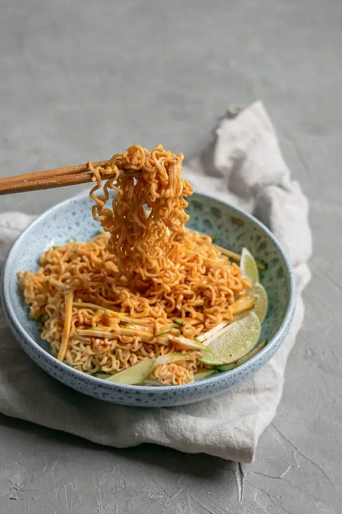

Gochujang Peanut Butter Noodles

Description
A fast 10 minute recipe for a quick but tasty dinner.
Ingredients
- 1/2 cup creamy peanut butter
- 3/4 cups hot water
- 2 tbsp gochujang paste
- 2 tbsp soy sauce
- 1 tbsp rice vinegar
- 1/2 tsp garlic powder
- 1-3 tsp sriracha or hot chili oil
- 10 oz noodles
Instructions
- Make the gochujang peanut sauce: Whisk together all the sauce ingredients until smooth. Thin with additional water as needed.
- Cook the noodles according to package directions.
- Toss the noodles in the sauce
- Serve with chile powder, hot sauce, or hot chile oil. Enjoy warm or cold.